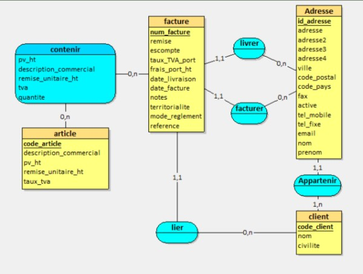
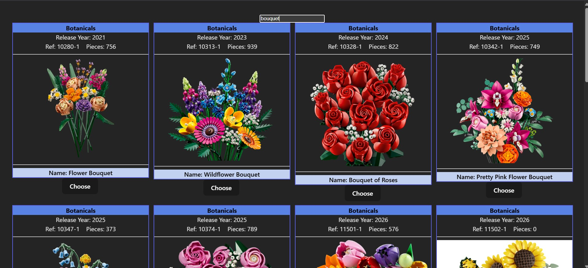
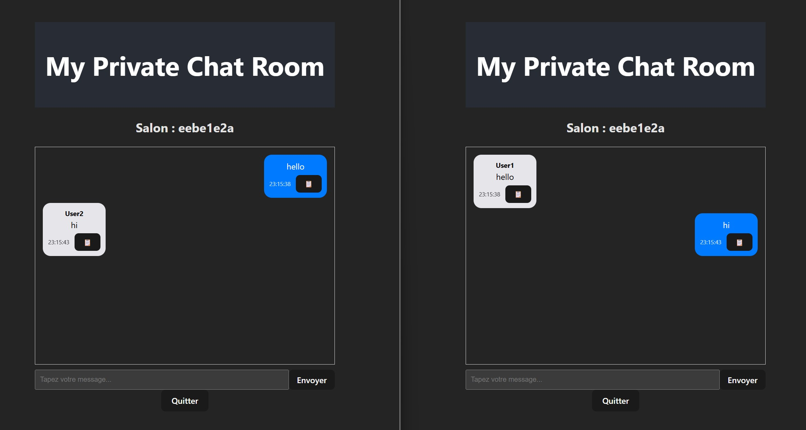
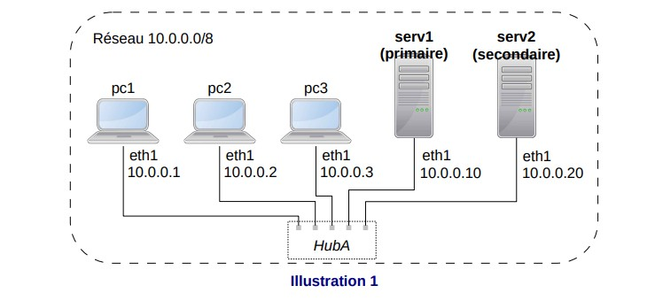

Bienvenue sur mon portfolio
Je suis Clara Drieux, étudiante en deuxième année de BUT informatique à l'IUT Gustave Eiffel.

Mes projets
SAE Tableau Lego

Création d'un site en HTML/CSS/JS/PHP transformant une image en tableau de briques en passant
par un algorithme de pavage en C.
Gestion des données avec MySQL et MongoDB. Relations des parties en Java. Deux jeux créés en
React/TypeScript pour gagner des points de réduction.
Compétences utilisées
Réaliser : Le site a été réalisé sur la demande de nos professeurs, chacun
ayant des consignes pour chaque module. Ainsi, en réalisant chaque module puis en les
assemblant, nous avons réalisé un site complet.
Optimiser : Le module en C répond à cette compétence car celui-ci devait
trouver un pavage de façon optimisée.
Gérer : L'utilisation de deux bases de données différentes pour diverses
fonctions répond à cette compétence en assurant la sécurité des données.
Conduire : L'ajout des jeux en React pour gagner des points de réduction
est un moyen d'ajouter les enjeux marketing. De plus, un module de communication répond aux
besoins des clients.
Collaborer : Des rôles ont été assignés pour ce projet. J'étais co-chef.
Lien vers le site
Projet TranPay
Création d'un site en HTML/CSS/PHP pour la gestion d'une banque pour une entreprise.
Gestion des données avec PostgreSQL et relation avec le site via une API.
Compétences utilisées
Réaliser : Nous avons dû réaliser ce site à partir d'un cahier des charges
et d'un product backlog. Nous avons pu également demander des précisions à notre MOA
(Professeur).
Gérer : Nous avons utilisé PostgreSQL pour la base de données car elle a
une meilleure sécurité pour les transactions bancaires.
Conduire : Nous avons appliqué la méthode agile pour assurer le bon suivi
du projet et respecter les besoins clients.
Collaborer : Pendant ce projet, chaque personne avait son rôle et ses
tâches à accomplir grâce à la méthode agile.
Lien vers le github
Projet TranWay
Création d'un site avec React et Typescipt et base de données MongoDB pour réserver des billets de train en ligne. Utilisation d'une API ainsi que de l'API de la SNCF pour avoir un jeu de données.
Compétences utilisées
Réaliser : Nous avons dû réaliser ce site uniquement à partir d'un product
backlog. Nous avons pu également demander des précisions à notre MOA (Professeur).
Gérer : L'utilisation d'une base de données non relationnelle comme MongoDB
a été réfléchie notamment par la complexité des objets que sont les trains.
Conduire : Nous avons appliqué la méthode agile pour assurer le bon suivi
du projet et respecter les besoins clients.
Collaborer : Pendant ce projet, chaque personne avait son rôle et ses
tâches à accomplir grâce à la méthode agile.
Lien vers le github
Projet Facturation

Création d'une base de données PostgreSQL permettant de gérer des factures non immuables à partir de fichiers CSV non conformes.
Compétences utilisées
Gérer : Le projet a été effectué sur PostgreSQL en raison des transactions
et pour ainsi assurer une meilleure sécurité des données.
Conduire : La méthode agile a été appliquée pendant ce projet, ce qui a
permis de s'assurer du bon suivi du projet ainsi que d'assurer que les besoins clients ont
été répondus.
Lien vers le github
TP Set Lego

Création d'un site web via React et Typescript permettant d'afficher tous les sets lego d'une l'API externe en fonction de la barre de recherche.
Compétences utilisées
Réaliser : Suite aux suivi des consignes ainsi qu'aux cours enseigner sur React, j'ai pu réaliser un site complexe.
TP Chat

Création d'un site web via React et Typescript permettant de discutter dans une salle de chat privé en générant des id.
Compétences utilisées
Réaliser : Suite aux suivi des consignes ainsi qu'aux cours enseigner sur React, j'ai pu réaliser un site complexe.
TP Réseaux

DNS (Configurer un serveur DNS primaire et secondaire), service web (Configurer un serveur HTTP) et DHCP (Découvrir le protocole puis configurer un serveur DHCP)
Compétences utilisées
Administrer : La création des différents serveurs est l'application concrète pour gérer et déployer un réseau.
Mes compétences
Réaliser : TP React Typescript
Pour cette compétence, je vais prendre mes TP Reacts Chat et LegoSet comme exemple. Lors de ces
TP, des consignes nous ont été données pour réaliser ces deux sites. Afin de bien réaliser ces
sites, il a fallu bien comprendre le fonctionnement de React en lisant le cours attentivement.
Et petit à petit, on réussit à créer des mécanismes complexes comme la recherche d'un set à
partir d'une API ou encore faire un chat box.
Bien d'autres projets, si ce n'est pas tous les projets, répondent à cette compétences puisqu'il
s'agit de réaliser un produit à partir d'éxigences.
Optimiser : SAE Tableau Lego
Pour cette compétence, je vais prendre exemple de ma SAE Tableau Lego. Lors de ce projet, il
nous a été demandé de réaliser un algorithme en C permettant de trouver un pavage correspondant
à l'image en tenant compte du stock des legos disponibles, ou bien en faisant en sorte
d'utiliser
le moins de couleurs possible ou d'en faire un moins cher possible. Pour cela, le C est le
langage le plus approprié car son coût en mémoire est faible si l'algorithme est bien fait.
Ce projet fut le seul à demander cette compétence mais fut très intéressant à appliquer.
Administrer : TP réseaux
Pour cette compétence, je vais prendre mes TP réseaux pour exemple. Cette année, nous avons eu
au premier semestre 3 TP réseaux. Le premier consistait à configurer des serveurs DNS. Le second
a configuré un serveur HTTP. Le dernier a configurer un serveur DHCP. Ce dernier n'avait pas
été étudié en cours, les deux premiers TP ont donc pu nous monter en compétence pour configurer
un serveur DHCP, et donc finir par déployer une architecture réseau complète.
Ainsi, nous avons pu apprendre a configurer différents services au sein d'un réseau ce qui nous
permet une meilleure compréhension des outils que l'on utilise pour travailler.
Gérer : Projet facturation
Pour cette compétence, je vais prendre exemple sur le projet facturation. Lors de ce projet,
nous avons du créer une base de données devant contenir des factures immuables, tout en ayant
toujours la possibilité de modifier les informations personnelles du client comme l'adresse
postale. Nous avons donc utilisé des procédures stockées ainsi que des triggers pour avoir une
base sécurisée mais également créé de façon automatique des tables à partir d'autres tables
insérées par des fichiers.
Nous avons également créé en supplément une interface pour
insérer une facture dans la table, ce qui complète la compétence vu qu'elle interagit avec une
application.
Plusieurs autres projets utilisent également des bases de données et demandent de la sécurité,
ce
qui permet d'avoir cette compétence très solide.
Conduire : Projet TranPay
Je vais prendre pour exemple le projet TranPay pour illustrer cette compétence. Ce projet a
nécessité un suivi de projet important. En effet, le domaine bancaire n'étant pas notre domaine
professionnel, il a fallu bien s'organiser pour comprendre le fond et la forme que le site
allait avoir. De base, notre MOA n'étant personne d'autre que notre professeur, nous a donné un
cahier des charges ainsi qu'un product backlog pour réaliser ce site gérant des transactions
bancaires pour entreprise. Ainsi, nous avons appliqué la méthode agile pour répartir les
différentes étapes du projet mais également poser le plus de questions possible à notre MOA
pour bien cibler les besoins métier des clients et des utilisateurs.
Cette compétence a été également appliquée à la majorité des projets pour s'assurer de la bonne
voie des projets et ainsi garantir qu'ils répondent aux besoins clients.
Collaborer : Projet TranWay
Pour cette compétence, je vais prendre le projet TranWay comme exemple. Lors de ce projet, on
nous a demandé d'appliquer la méthode agile. Ce qui signifie également s'attribuer des rôles et
taches distinctes pour le projet. Ainsi, chaque personne savait quelles pages et quellez
fonctions
développer et ainsi produire un site fonctionnel en un minimum de temps.
La méthode agile ayant été une méthode très appuyée cette année, nous l'avons appliquée dans
tous
les projets. Ainsi, savoir quel rôle jouer au sein d'une équipe n'est plus qu'une formalité
lorsque l'on commence un nouveau projet et cette compétence est donc bien appliquée.
Mes connaissances
Langages de programmations
- Web : HTML / CSS (BootStrap) / JS (TypeScript / REACT / Node) / PHP
- Logiciels : Python / Java / C
- Base de données : SQL / PostgreSQL / NoSQL
Logiciels de programmations
- Web : VS Code / PhpStorm / XAMPP
- Logiciels : VS Code / Eclipse / IntelliJ IDEA
- Base de données : MySQL / pgAdmin / MongoDB
Logiciels annexes
- Maquettage : Figma / Scene Builder
- Documentation : Google drive / Canvas
- Versionnage : Git / GitHub
- Organisation : Trello / Jira / GanttProject
Autres connaissances
- Méthodes de travail : Agile / Scrum / Kanban / Cycle en V
- Langues : anglais (B2) / Allemand (B1)
- Soft skills : travail en équipe / autonomie / organisation / créativité /
patience / soucieuse du détail
À propos
Mon portfolio me sert à évaluer mes connaissances et à tenir un dossier permanent
de mes compétences et de mes projets.
Cela fait maintenant deux ans que je suis dans le domaine de l'informatique,
et j'ai pu acquérir de nombreuses compétences et connaissances grâce à mes projets
universitaires.
Après mon BUT, je souhaiterais poursuivre mes études dans le domaine des jeux vidéo.
Je voudrais me diriger dans ce domaine car je veux continuer l'informatique mais en y ajoutant
plus de créativité, et je suis passionnée de jeux vidéo depuis que je suis petite.